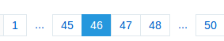

分页器-JSpagination-js
pagination-JS组件用于前端分页，无刷新等应用场景
示例
$('.test').pagination({
pages: 50,
styleClass: ['pagination-large'],
showCtrl: true,
displayPage: 6,
onSelect: function (num) {
console.log(num) //打开控制台观察
}
})
最小配置项
$('.test').pagination({
pages: 6
})
配置项
pagination组件一共有8个配置项，较于其他分页插件，配置更为灵活简单，提供2种分页计算方式，且可控页码显示的数量。
- styleClass
- styleClass接收一个数组，包括结合SUI CSS部分的pagination-small，pagiantion-large和默认的pagination样式,以后提供皮肤样式和自定义样式的时候也可以在这里引入
- eg: styleClass: ['pagination-large', 'custom-red', 'custom-size']
- displayPage
- displayPage指的是要显示多少个页码，如下图所示，展示了6个，默认显示5个
- 
- 指定了displayPage以后，pagination组件会根据该配置项自动分页，出于用户体验的考虑，displayPage最小为5个，低于5个会自动被改写为5个
- 需要指出一种情况是，如果displayPage为n,但是总的页码为n+1时，pagination组件会展示全部的页码（也就是n+1），不出现省略号
- currentPage
- 当前页，默认为第1页，不解释
- itemsCount,pageSize和pages
- pagination组件提供两种计算分页的方式，一种是直接给出pages,另一种是给出数据的总条数和每页显示的条数，pagination会自动计算出页数。
- 当给出pages时，会忽略itemsCount和pageSize参数
- P.S:一般情况来讲，通过pages来配置分页，适用于分页数固定的情况。
- showCtrl
- 是否展示总页数和跳转控制器，默认为false，设置为true时会在pagination节点上注册一些事件，对跳转页码做合法性校验，并支持键盘操作。
- onSelect
- 点击页码时的回调函数，提供一个当前点击的页码的参数，可以在回调函数中使用自定义事件。
- remote
- 远程控制开关，如果设置为true的话,分页器不会自动跳转，需要人工调用goToPage方法，主要用于一些特殊条件下，比如点击了页码之后，需要等页面加载完之后再跳转
函数
pagination组件对外暴露2个函数
- $('selector').pagination('updateItemsCount',itemsCount[, pageToGo])
- 当数据条目总数发生变化时，调用此方法，参数为新的数据条目总数
- pageToGo是要跳转到的某页
- $('selector').pagination('updatePages',pages[, pageToGo])
- 当分页直接采用pages配置项时，pageSize不存在，因此只能通过该方法直接更新分页数
- P.S:一般情况来讲，通过pages来配置分页，适用于分页数固定的情况,不推荐使用此方法。
- pageToGo是要跳转到的某页
- $('selector').pagination('goToPage', pageNum)
- 跳转到指定页面